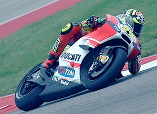
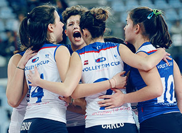
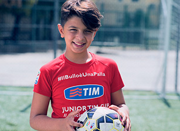

Lo sport è passione, rispetto e condivisione di emozioni.
Un patrimonio di valori e buone pratiche in cui ci identifichiamo.
TIMRACE
TIM presenta TIMRace, la piattaforma social con commenti e tweet sul mondo delle due ruote. Vivi la MotoGP da protagonista.
TIM presenta TIMRace, la piattaforma social con commenti e tweet sul mondo delle due ruote. Vivi la MotoGP da protagonista.
 TIMSTADIUM
TIMSTADIUM
TIM allarga i confini del campionato di calcio Serie A. Con TIMStadium migliaia di dati in tempo reale per regalarti un'esperienza calcistica mai vista.
VOLLEY TIM CUP
Scopri il lato social della pallavolo. Le campionesse del volley e le giovani adolescenti, insieme per promuovere lo sport e l'universo di valori e buone pratiche a esso collegate.
Scopri il lato social della pallavolo. Le campionesse del volley e le giovani adolescenti, insieme per promuovere lo sport e l'universo di valori e buone pratiche a esso collegate.
 IL BULLO È UNA PALLA
Il bullo dell'era digitale evolve e diventa tecnologico attraverso i social network. L'impegno della Junior TIM Cup contro il cyberbullismo
Il bullo dell'era digitale evolve e diventa tecnologico attraverso i social network. L'impegno della Junior TIM Cup contro il cyberbullismo
#GUARDAAVANTI
Il progetto promosso da TIM in collaborazione con Ducati per una guida sicura, anche attraverso un uso consapevole del cellulare. Il futuro è di chi ha una meta ed è intenzionato a raggiungerla.
Il progetto promosso da TIM in collaborazione con Ducati per una guida sicura, anche attraverso un uso consapevole del cellulare. Il futuro è di chi ha una meta ed è intenzionato a raggiungerla.

Ci impegnamo ogni giorno per i bisogni delle comunità con soluzioni innovative e altamente tecnologiche.
TIM SOSTIENE SODALITAS SOCIAL INNOVATION CON UN PREMIO SPECIALE
Come possono contribuire le imprese ad innovare l'universo del Non Profit? Quali sono i vantaggi di questa collaborazione nella vita di tutti i giorni? Se ne parla il 18 novembre al Sodalitas Social Innovation, un evento dedicato ai progetti innovativi del Terzo Settore. Inoltre nell'edizione 2015 un'opportunità in più per chi vuole innovare per il bene comune. Grazie al Premio Speciale TIM-WithYouWeDo, 3 progetti finalisti hanno la possibilità di raccogliere fondi sulla piattaforma di WithYouWedo.
Come possono contribuire le imprese ad innovare l'universo del Non Profit? Quali sono i vantaggi di questa collaborazione nella vita di tutti i giorni? Se ne parla il 18 novembre al Sodalitas Social Innovation, un evento dedicato ai progetti innovativi del Terzo Settore. Inoltre nell'edizione 2015 un'opportunità in più per chi vuole innovare per il bene comune. Grazie al Premio Speciale TIM-WithYouWeDo, 3 progetti finalisti hanno la possibilità di raccogliere fondi sulla piattaforma di WithYouWedo.